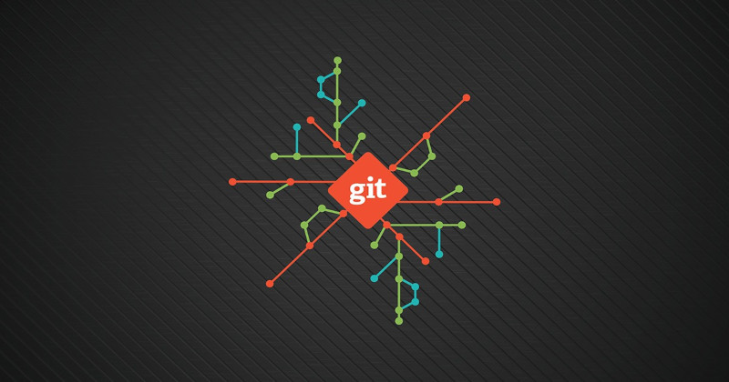

Git Overview
2018-10-30

Git is a popular version control system. It was invented by Linus Torvalds in 2005 for development of the Linux kernel.
It is used to it track changes in any set of files. Mostly it is used by teams of software developers to save and share source code while collaborating on large projects.
Some people have used Git for other things like writing technical documents and whole books.
Git is a terminal-based program that requires users to input commands. There are graphical software applications that allow users to interact with Git through a point-and-click visual interface.
At first glance Git might seem complex but most people can learn the basics in a few hours.
Personally I love Git and use it for all my projects. Below is a list of resources you can use to learn Git.
Resources
- YouTube Video - Git Tutorial for Beginners: Command-Line Fundamentals
- Getting Started - Git Basics
- Git for Beginners